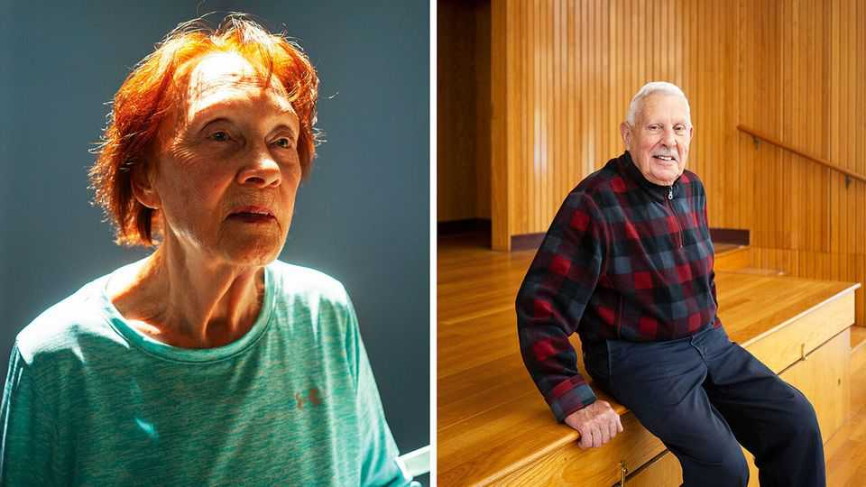
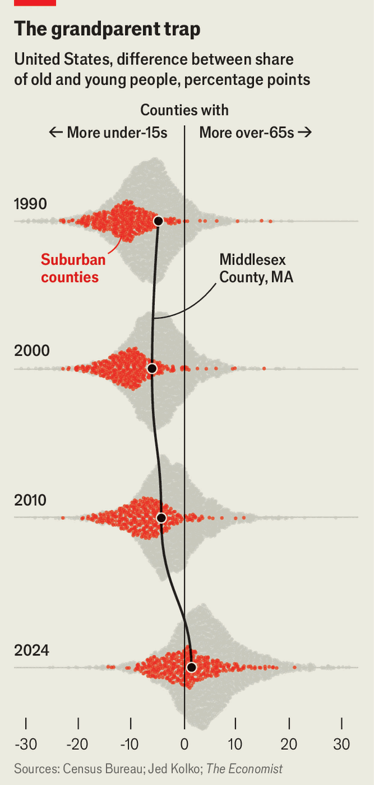

America’s quintessential places are getting old, fast
Welcome to the greying suburbs
June 11th 2026

Over the sound of a country crooner praising Jose Cuervo tequila, Julie Kaufmann encourages her class of line dancers with some pointed advice. “This will help those neurons fire and prevent cognitive decline,” she says, explaining that following steps in sequence will keep their memory sharp. For those with knee, hip or balance issues she offers an alternative to the grapevine, a move where dancers cross one foot in front of the other. “You are ageing gracefully!” she calls out to the room, filled with giddy older adults spinning around in orthotic sneakers.
In Winchester, Massachusetts, a suburb of Boston, stately colonial homes sit on manicured lawns. The public schools are among the most sought-after in the state, which boasts America’s highest-scoring public education system. But one of the most popular institutions in town is the Jenks Centre, the town’s senior community centre where Ms Kaufmann’s line dancers gather. So many older residents now attend events at the centre that it has had to expand its private transport service and the car park can no longer accommodate the steady stream of patrons.
Though the ageing of rural America is a familiar story, in the past few years the same pattern has crept across suburbia. Suburbs were built for young and growing families and often anchored around a public-school system; but between 2000 and 2024 the number of elderly residents living in suburban counties more than doubled. Meanwhile, the number of young children barely budged and in many places even fell. That is steadily changing the character of many of America’s quintessential suburbs, with consequences for housing markets, schools and local politics.

At an ageing-preparedness symposium at the Jenks Centre, a man informs the crowd that although life expectancy at birth in America is “a little under 80”, upon reaching age 65 the actuarial tables suggest it is 20 additional years for a man and 22 years for a woman. “Oh God,” mutters one woman in the crowd; a few others grimace or laugh uneasily. Meanwhile at Winchester Hospital, fewer babies are being born into the world. In 2014 every 100 baby-boomers reaching retirement age in America were replaced by 109 infants. By 2024 that had fallen to just 88 newborns.
But even with fewer children being born, housing shortages have created a generational traffic jam. America still has plenty of families competing for limited homes in desirable suburbs. One problem is that fewer homes are being built. In 2025 a paper by two economists found that had housing supply grown between 2000 and 2020 at the same rate it did across the two previous decades, there would be 15m more units available. They found the problem was more acute in the suburbs.
According to The Economist’s analysis of census data, the share of large, single-family homes occupied by older adults who do not live with children has risen sharply. Today, 27% of homes with three or more bedrooms are occupied exclusively by people aged 65 or older. That share is up from 19% two decades ago.
Financial incentives encourage people to stay put. About two-thirds of older homeowners have no mortgage, meaning millions of family-size homes today are owned outright by elderly Americans. And across the country, many local governments “have bent over backwards to make staying in your home affordable for seniors”, says Jenny Schuetz, a housing-policy expert at Arnold Ventures, a research and advocacy group. This is often in the form of tax benefits, she adds.
The few homes that are being built do not cater in size or kind for those older folk who favour downsizing. Data from the National Association of Home Builders, a trade association, show that just over 10% of new single-family homes built in 2024 had two bedrooms; almost as many built that year had five or more. There are too few places in the suburbs where people can comfortably grow old in smaller homes or apartments that would allow them to remain in their community, close to their friends, doctors and church.
The consequences spread through the suburbs. In Winchester—where, as in many towns, the elementary schools largely draw students from the surrounding neighbourhoods—one school is preparing to welcome its smallest kindergarten class yet. As fewer young families move in, enrolment falls. And although it is politically unpopular to propose school closures, maintaining the same number of buildings and teachers for a shrinking body of pupils eventually makes little fiscal sense.
Winchester is not alone. Elementary-school enrolment has declined everywhere. But is has dropped especially fast in the suburbs, where it fell by 14% from 2012 to 2023. That is too much to be accounted for by the increase in private- and home-schooling during the covid-19 pandemic. Stefanie Mnayarji, a mother in Winchester and a member of the town’s school committee, argues that the trend is not inevitable. It “can easily change if there’s new housing and multifamily units going up”, she says. “That can shift enrolment numbers almost overnight.”

The effects spill into local politics, too. Older residents living on fixed incomes are more sensitive to tax increases. This spring voters in Winchester rejected a proposal to override the normal tax cap to fix budget shortfalls in the school system and other services. “I know plenty of retired folks who were supportive of the recent override attempt,” says Bill McGonigle, a town-board member who was in favour. “But I stood outside the polling place almost all day, and I saw a lot more older citizens showing up to vote than younger ones.”
Pensioners not only vote more but are also more likely to take part in local politics in other ways, by writing letters to elected officials and attending town meetings. Analysis by political scientists has found that those who are older and own homes are more likely to attend local civic meetings and to oppose new housing construction. That creates a feedback loop. Housing shortages discourage younger families from moving in and older residents from downsizing; school enrolments fall and communities age even faster than they otherwise would.
Phillip Beltz, the director of Winchester’s Council on Aging, tries to persuade local planning boards to build more housing. “To truly make a place age-friendly”, he says, “you need to have a whole menu of housing opportunities.” Too often, however, that view is the exception. Dr Schuetz laments that politicians are loth to talk about many of these generational issues because “it’s really politically toxic.” That strategy is getting harder to maintain as demographic change is no longer a forecast. It has come to suburbia’s front lawns, schoolyards and town halls. ■
Stay on top of American politics with The US in brief, our daily newsletter with fast analysis of the most important political news, and Checks and Balance, a weekly note that examines the state of American democracy and the issues that matter to voters.